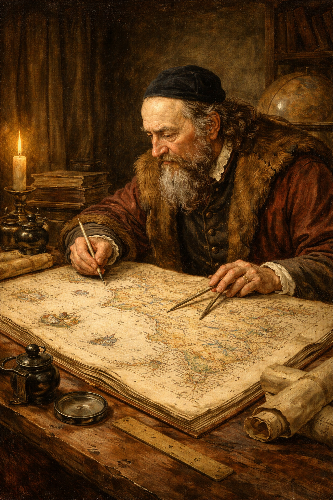

Nakreslil jsem mapu Moravy:
Když jsem po Bílé hoře prchal z vlasti,
vytvořil jsem vůbec nejpřesnější mapu Moravy své doby.
Zanesl jsem do ní hory, řeky, ale i tehdejší vinice a lázně.
Přišel jsem o celoživotní dílo:
Léta Páně 1656 shořelo město Lešno, kde jsem tehdy žil.
V plamenech zmizel i můj Poklad jazyka českého slovník, který jsem psal přes čtyřicet let.
„Všichni na tomto světě jsme jen poutníci.
Naším úkolem je neustále se učit, od kolébky až do hrobu.“

Zpět